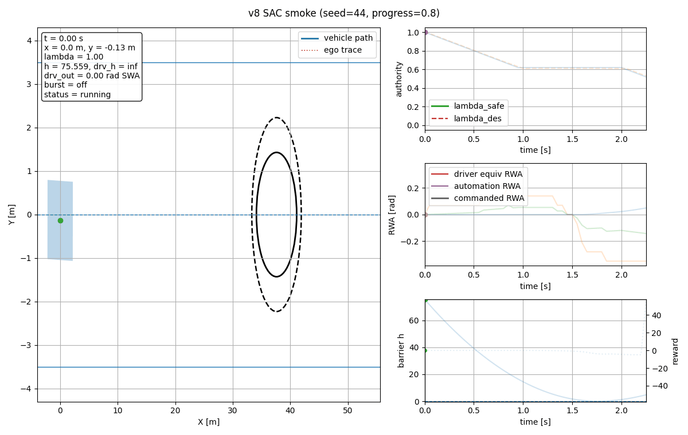
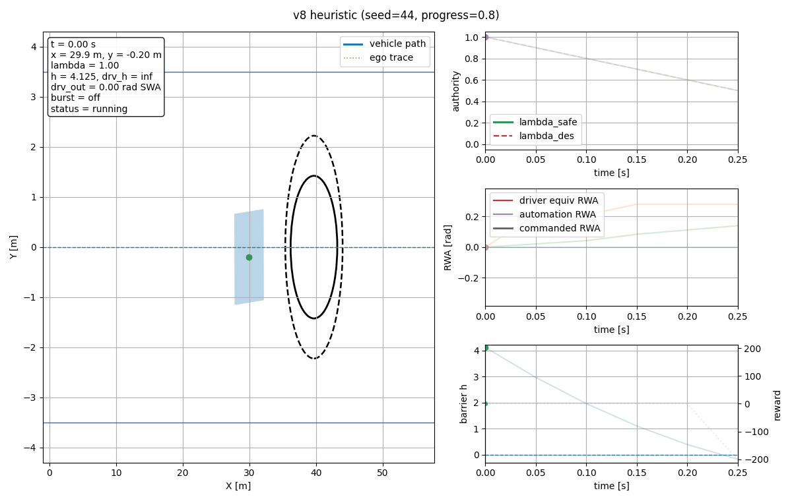
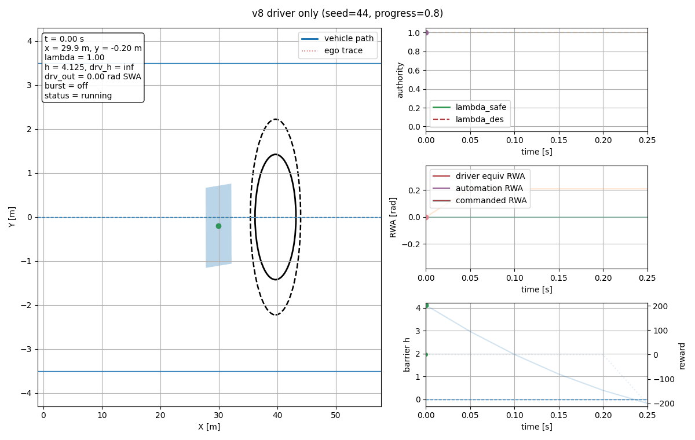

Common setup: seed=44, curriculum_progress=0.8. This specific episode sampled a medium-difficulty frozen-driver case. The SAC smoke policy succeeds, while driver-only and heuristic fail on the same draw.

Success, min barrier ≈ 0.008, mean takeover ≈ 0.304.

Failure on the same sampled episode.

Immediate collision, no authority intervention.